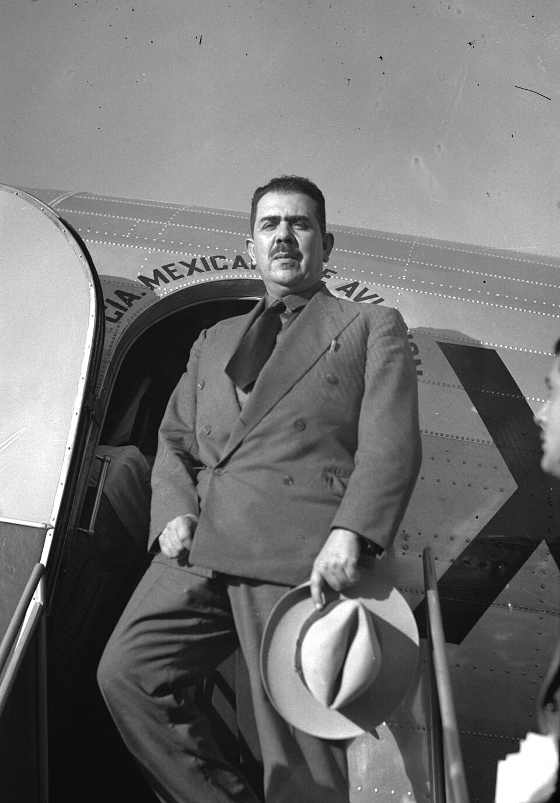
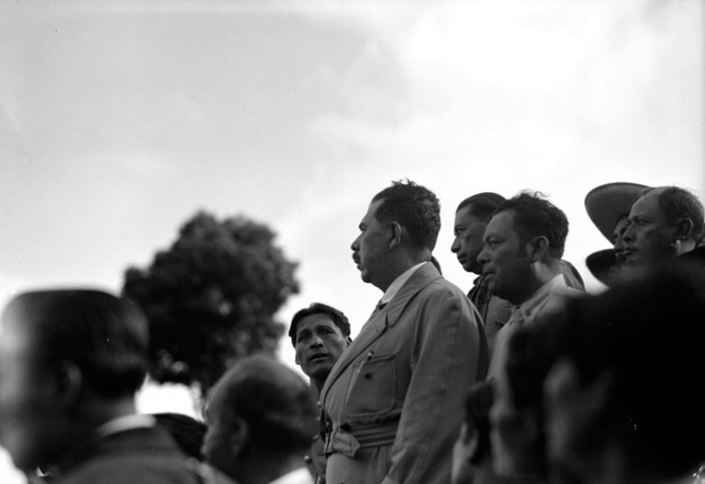
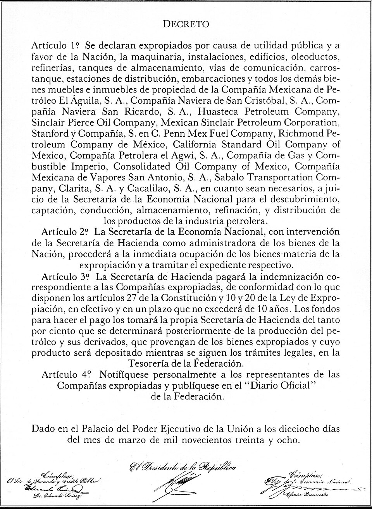

Institucionalización y movimientos sociales durante el gobierno de Lázaro Cárdenas (1934-1940)
6 añosde gobierno (sexenio)
≈18 millonesde hectáreas repartidas
18/03/1938expropiación petrolera
Línea del tiempo
1934Cárdenas asume la presidencia
1936Expulsión de Calles y nace la CTM
1936-37Gran reparto agrario en La Laguna y Yucatán
1937Nacionalización de los ferrocarriles
1938Expropiación petrolera y creación de PEMEX
1940Termina el sexenio

General Lázaro Cárdenas del Río, 1937.
1El México después de la Revolución
Cuando Lázaro Cárdenas llegó a la presidencia en 1934, el país aún estaba sanando las heridas de la Revolución Mexicana. Había muchos retos:
PolíticosEl país necesitaba un gobierno fuerte que uniera a todos y evitara nuevos conflictos entre los grupos revolucionarios. Plutarco Elías Calles aún tenía mucho poder (el “Maximato”).
EconómicosLa mayoría de la riqueza estaba en manos de unos pocos, el campo estaba abandonado y México dependía mucho de las empresas extranjeras.
SocialesLa mayoría de la gente era pobre, muchos no sabían leer ni escribir y los campesinos no tenían tierras propias.
Imagen: Montero Torres, T. (1937). General Lázaro Cárdenas del Río [Fotografía]. Wikimedia Commons. https://commons.wikimedia.org/wiki/File:General_L%C3%A1zaro_C%C3%A1rdenas_del_R%C3%ADo.jpg
Texto: Krauze, E. (1997). Biografía del poder: Caudillos de la Revolución mexicana (1910-1940). Tusquets Editores.

Lázaro Cárdenas con campesinos, ca. 1934.
2La Reforma Agraria
Fue una de las medidas más importantes para cumplir con las promesas de la Revolución: “la tierra es de quien la trabaja”.
CausasLos campesinos vivían en la miseria y no tenían tierras. Las grandes haciendas controlaban casi todo el campo.
AccionesEl gobierno repartió cerca de 18 millones de hectáreas. Impulsó el ejido: tierras comunales que se trabajan en grupo y no se pueden vender.
ConsecuenciasLos campesinos pudieron trabajar su propia tierra y mejorar su vida. El ejido se volvió la base de la propiedad rural en México y en 1938 se creó la CNC para organizarlos.
Imagen: Casasola, A. (ca. 1934). Lázaro Cárdenas y campesinos [Fotografía]. Wikimedia Commons. https://commons.wikimedia.org/wiki/File:L%C3%A1zaro_C%C3%A1rdenas_y_campesinos.jpg
Texto: Meyer, M. C., & Sherman, W. L. (1991). The course of Mexican history (4.ª ed.). Oxford University Press.

Decreto de expropiación petrolera, 18 de marzo de 1938.
3La Nacionalización del Petróleo
El 18 de marzo de 1938, Cárdenas tomó una decisión histórica.
MotivosLas empresas extranjeras (de Estados Unidos e Inglaterra) explotaban el petróleo mexicano, pagaban poco a los trabajadores y no respetaban las leyes de México.
DesarrolloLas compañías se negaron a obedecer a la Suprema Corte, que les ordenaba pagar mejores salarios. Entonces Cárdenas expropió sus bienes y el petróleo pasó a ser de la nación.
ConsecuenciasMéxico recuperó el control de su riqueza y se creó PEMEX (junio de 1938). Hubo un boicot internacional, pero el pueblo se unió para ayudar a pagar la indemnización.
Cada 18 de marzo se conmemora el Día de la Expropiación Petrolera.
Imagen: Gobierno de México. (1938). Decreto expropiatorio [Documento]. Wikimedia Commons. https://commons.wikimedia.org/wiki/File:Decreto_Expropiatorio.jpg
Texto: Cárdenas, L. (1972). Obras I: Apuntes 1913-1940. Universidad Nacional Autónoma de México.
La institucionalización: organizar a la sociedad
CTM1936
Confederación de Trabajadores de México: unió a los obreros.
CNC1938
Confederación Nacional Campesina: organizó a los ejidatarios.
PRM1938
El PNR se transformó en Partido de la Revolución Mexicana, con sectores obrero, campesino, popular y militar.
IPN1936
Instituto Politécnico Nacional: educación técnica para el desarrollo del país.